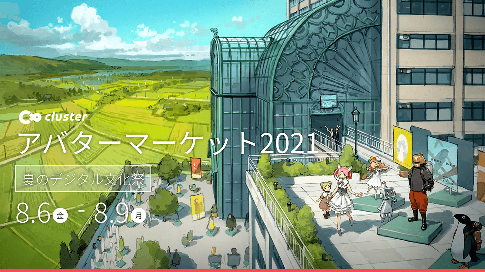
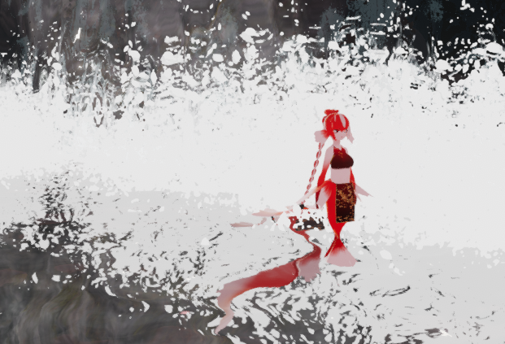

8/6〜8/9までの期間中、アバターマーケットが開催中！
今回のClusTimesは、｢告知したい！｣という出展者の方を募集し、インタビューした内容をお伝えします！

高千穂マサキさん
・今回出すアバターはどんなアバターですか？
高千穂マサキ氏｢『まころ』ちゃん（画像1枚目）ですね。私は『セシル変身アプリ』っていうアバター作成ソフトを使っているんですけど、これを使って、一体まず作ろうという事で、アプリ内で1度作ってからBlender等で編集して作りました。｣
・コンセプトを教えて下さい。
高千穂マサキ氏｢コンセプト…というか、夏開催のイベントなので、青や白などの爽やかな色を中心にデザインしました。｣
｢ズボンとスカートの2種類を用意してます。スカートの丈が短くて恥ずかしいという時だったり、あとは両方買って使い分けたりなどが嬉しいですね。最初はスカートの方だけだったのですが、自分で6点トラッキングで動いてみたら、思いのほか際どくて、急遽用意しました(笑)｣
・頭に乗っかっている被り物は何ですか？
高千穂マサキ氏｢これもセシル変身アプリに最初から入ってるものですね。ポンと乗せてあげるだけでこういうのが簡単に出来るので、この辺は他のアバター作成ソフトとは違うところですね。最初からアクセサリーが入っていて、つけたり外したりできるっていう。あと今回のアバターマーケットで再販するアバター（『コラル』/画像2枚目）のマフラーも、最初から入ってるやつで。揺れたりとかは自分でやらないといけないんですけど、こういうのをつけるのが簡単に出来るのが強みですね。｣
・やっぱり、こういう小物とかが充実してると良いですね。
高千穂マサキ氏｢そうですね。1から作ろうと思うと結構大変ですが、元々素体がある上でそこにパーツを加えて作れて、しかもそれを販売できるという点で、私は結構セシル変身を推してますね。｣
・こだわりのポイントを教えて下さい。
高千穂マサキ氏｢こだわりはVR内でとにかく自分が使いやすいと思うところに拘ってる点ですかね。例えば、ジャンプした時に髪の毛が乱れないようなスプリングボーンの設定だったり、あとVRで使った際に、手と顔の位置で表情が変わる関係上、表情がコロコロ変わってしまって鬱陶しい、ということにならないよう、基本表情の変化を目が動く程度の控えめな変化にして、両手をあげるというあまりしない動作でのみしいたけ目のような特殊な表情を入れ、日常会話で支障が出ないようにしてます。あと、帽子の手は、自分で触って揺らせるようにしております。普段自分もVRで遊ぶので、同じ環境の人が自分で触って楽しめるように仕上げました。｣
・セーラー服というチョイスも、涼しさを意識したチョイスですか？
高千穂マサキ氏｢そうですね。セシル変身で元々あるやつに、自分で色を変えて作ってます。やっぱり、セーラー服も夏っぽいチョイスですね。｣
・ゆれ物に触れるというのは、やはりとても楽しいことですか？
高千穂マサキ氏｢楽しいですね。自分を鏡で見た時に、触って動かせるものがあると、楽しいんですよね。髪の毛の長い子は髪の毛を動かしてると楽しいし、しっぽのある子はしっぽを動かしてると楽しい。揺れるって言うのは、やっぱりとても楽しいんですよね。デスクトップやスマホだと、体全体を動かさないといけないんですけれど、VRの場合、頭をちょっと動かすとか、フラフラっと動かすとか、そういう動作ができるので、そういう時に何か一つでも揺れるものがあれば、VRの人は楽しい要素のひとつだと思ってます。なので、自分はそういう要素を入れるように心がけてます。｣
・ゆれ物を設定してる人は結構多いですが、それを触れるようにしている人はあまり見かけないので、アピールポイントですね。
高千穂マサキ氏｢はい。みんなも髪の毛とか触れるようにして欲しいですね。そうすると、私が気に入る(笑)｣
・では、このアバターマーケットへの意気込み等あれば一言。
高千穂マサキ氏｢今回のアバターもかなり可愛くできたと思うので、今回もよろしくお願いします！｣
.png)
.png)
.png)
タマ吉さん
・今回出店されるアバターのお名前、コンセプトやモチーフを教えてください
タマ吉氏「今回出すアバターは金魚姫といってVRoidだけでつくっていて、BlenderやUnityも初めて触っています。水をつかったワールドがclusterには結構多いイメージがあり、それを活かせるようなお魚系のアバターにしました。」
.jpg)
・滝や池など、様々な自然系のワールド多いですよね。

・今回VRoidを扱い制作した中でディテールをこだわった点を教えてください
タマ吉氏「金魚なんで、ヒレのひらひら感や豪華さをすごく今回こだわりました。」
・なるほど、服装でこだわった点はありますか？
タマ吉氏「金魚姫の着ている服ですが、金魚が元々中国の魚なので、胸あては中華っぽい服で豪華にしてます。腰に布をくっつけてるだけのような感じですが(笑)。」
・服に関する何か元ネタはありますか？
タマ吉氏｢特にないですね。先程も言ったように魚なのでひらひらさせたくて、それもあって髪を長めに。｣
・揺れものがあると、使ってる人も見てる人も楽しいですもんね。
タマ吉氏｢ですね。今回のアバターも、揺れを楽しめるアバターになってます。｣
・VRoidで作れる人型アバターとは離れているデザインですが、どんな工夫をされましたか？
タマ吉氏「まず足は完全に透明にしています。尾ひれはロングコートの服のパラメータを破壊した状態にして、胴体はかなり伸ばしてこの形状になっています。頭部と腰のヒレは髪の毛でつくっていますが、腰のヒレはUnityやBlenderで調整しました。パラメータがうまくいったので結構偶然の産物ですね（笑）。やっぱりヒレのダイナミックさはこだわりです！」
・人魚型になったのが偶然となると、そこから金魚モチーフにしようと？
タマ吉氏｢いえ、元々キャラクターを作るのが好きで、元々金魚姫っていう自分で考えたキャラがいたのですが、それをベースに落とし込んだという感じですね。｣
・金魚姫っていうキャラクターの由来などはありますか？
タマ吉氏｢あー、それは人魚姫を1文字変えたら金魚姫になるなって言う所から。結構ダジャレ的な発想ですね。(笑)｣
・最後に意気込みを！
タマ吉氏「この金魚姫のアバターはアバターマーケット限定で出すので、この機会に！」
.png)
ガルペノさん
・今回ガルペノさんの3体のアバターについてそれぞれ詳しく教えてください
ガルペノ氏「1体目がおふとんアバターです。」
.jpg)
・おふとんの色が画像と違いますが、アイコン画像によって色が分かる仕組みですか？
ガルペノ氏「はい、ユーザーアイコンの中央ぐらいから色を取得して、おふとんの色になります。」
・2体目のアバターについて教えてください
ガルペノ氏「2体目のアバターは2か月前ぐらいの『汎用人型ロボットGEPHR 重装甲モデル』の特別モデルみたいな感じです。改変してイベント限定販売にしてみようかなといった次第です。
パトレイバーのイングラムみたいなモチーフを意識してます(笑)元のロボットは色だけ変えるつもりだったんですが、頭の形状を変えてみたり肩にパトランプを載せるか迷ったりしてました。
これをもうちょっとヒーローチックにしました。」
・3体目のアバターについても教えてください
ガルペノ氏「3体目はblenderでいちから作ったアバターで、コンセプトとしては普段僕が描いてる絵から3Dに落とし込むのを目指した感じです。
鳩羽つぐさんという方を意識して、モノトーンでめっちゃ元気なキャラではないって感じで一週間で設定練ってコンセプト書いて、そのへんはかなりこだわりました。」
世界観とかアバター着る側は求めてなくて、自分でカスタマイズするのが主だと思うんですが設定深く掘り下げても敬遠されるし、だからといって浅いものは出したくなかったので板挟みですね（笑）」
・宣伝の画像の文言についても教えてください
ガルペノ氏「どんなアバターにもなれるからこそ、主体としての自分はどうありたいかっていうのが定まってないと、どうなりたいかすらもわからないんじゃないかと思っていて、どんな自分にもなれるってことはいいことでもあるけど、いいことばかりでもないって感じがしますね。
アバター買うときってアバターを着たときの自分を想像しているので、どんな自分でありたいかを潜在的に意識していると思います。例えば、ロブスターのアバターは、そのロブスターのアバターを着ている自分を想像すると思うのですが、海のワールドでそのロブスターの姿になってみるとか、どんな立ち振る舞いをしたいかを先行して考えていますよね。
・購入者へのアバターのアピールポイントを教えてください。
ガルペノ氏「ふとんはまあふとんでしょうってことで、自分が寝たいときや誰かを寝かしつけたいときに使ってほしいです。一点気をつけてほしいのは
（布団になっている）自分はまったく動けなくなることです（笑）
移動しちゃうとその中で寝てる人を叩き起こすことになってしまうので、
誰かが自分のなかに居たら動けないという、ふとんの気持ちがちょっとわかります（笑）
GEPHRは揺れ物がいくつかあって、左についている手錠、右の足についている警棒が揺れます。元々はスケルトンフレームといって骨だけの状態から装甲をペタペタくっつけているんですね、ガンプラのMGみたいな感じです。
デザインしたときのこだわりとしては、逆関節に見えて人間と実は関節の動き方が変わらないんですね。
秋山ゆうはテクスチャをblender上で書いてて、なるべくアンビエントオクルージョンのような機械的な色塗りではなく厚塗りをしていて、表現に気をつかった部分かなと思いますね。
カバンに関してはかなりこだわったのですが、スプリングボーンで制御しているのでその仕様上あらぬ方向にいってしまうところがありますね。時間の都合で妥協せざる得ない部分はいくつかありました。
今回の出展の意図は、作品発表の場として捉えていて、ビジネスというよりもコミケのように考えています。その場でみてひとめぼれすることってあるじゃないですか、そんな機会であるような、買いたいと思った人に買ってほしいです。
そんな力むようなイベントではなく、あくまで発表の場として捉えています。」
.png)
赤井キツネビさん
・今回出展するアバターはどんなアバターですか？
赤井キツネビ氏｢今回は3人のアバターを出展します。1人目(画像1)が『くれま』ちゃんですね。クレマチスっていうお花のモチーフで作った、可愛めの女の子のアバターです。｣
.png)
・色のグラデーションが綺麗ですね。
赤井キツネビ氏｢ありがとうございます。｣
・こだわったポイントを教えて下さい。
赤井キツネビ氏｢髪の毛の揺れや、服の揺れですかね。しっかりとコライダーを入れておいたので、上を向いたりしても髪の毛が服を貫通しないんです。｣
・ほんとだ。すごい。あと、揺れ方も本物のお花みたいな。
赤井キツネビ氏｢ありがとうございます。揺れ方はふんわりとするように、工夫しました。｣
｢あとは、アイテムを持って、上をむくと、いわゆるしいたけ目になるっていう。｣
・では、他のアバターもよろしくお願いします。
赤井キツネビ氏｢この子は、『ほうきちゃん』ですね。魔法使いがモチーフです。ちっちゃい魔女なので、お空を飛ぶ練習中、みたいな。｣
.png)
・なるほど、くれまちゃんとはまた違った印象、かわいらしさのあるアバターですね。
赤井キツネビ氏｢色合いはくれまちゃんよりは暗めですね。｣
・なるほど。空を飛んでるのも凄いですね。
赤井キツネビ氏｢これは、Headのあたりのボーンに１箇所付けて、そこから動かせるようにしてありますね。｣
・あと、髪の毛や飾りが揺れたりもするんですね。
赤井キツネビ氏｢そうですね。あまり、体そのものの動きがないので、その分揺れ物を頑張った感じですね。｣
・あと魔法使い以外にもモチーフなどはありますか？
赤井キツネビ氏｢夜空や星などはイメージしてますね。髪の毛の飾りや、後ろ側の髪の毛の先が星型になってたりしてます。これ思いついた時はやった！って感じでしたね(笑)｣
・髪の毛の先を星型にするって発想はなかったですね。
赤井キツネビ氏｢あまり目立たないけど、気づいたらあっ！ってなってもらえる感じですね。｣
・では、あともう1人の方もお願いします。
赤井キツネビ氏｢はい。これは『アメ』ですね。性別は不明で、ちっちゃい雨の子みたいな。レインコートなどで、全体で見るとてるてる坊主みたいなシルエットにしてみました。｣
.png)
・髪型も丸い感じで、雨のモチーフも色々入ってて、かわいいですね。
赤井キツネビ氏｢もう梅雨明けちゃったんですけどね、なんなら手をつけた段階で梅雨明けてましたね。(笑)｣
・あぁ(笑) でもまだこれから台風がありますから。
赤井キツネビ氏｢台風…吹き飛ばされちゃいさそう。ちっちゃいから。(笑)｣
・あと、色合いが、色と色との間がハッキリとしてるグラデーションで、それも良いなと。
赤井キツネビ氏｢そう、こういうの好きなんですよ。普通にテクスチャを描きました。」
「コート自体は普通に円形で、でっぱりなども無いので、テクスチャで描くだけだったので、割と楽でしたね。｣
・このレインコートは、雨雲モチーフですか？
赤井キツネビ氏｢はい。雨雲と、それから降ってくる雨のモチーフですね。あと、髪の毛の形もそれっぽく。｣
・なるほど。あと、レインコートを見てると、袖が長いのも良いですね。あと目隠れなのも良い。
赤井キツネビ氏｢袖が長いの良いですよね。あとちゃんとフードもついてます。頭に対してちっちゃいから被れないんだけど。そしてフードも揺れます。目隠れもいいですよね。目が隠れている分、口に注目が行くので、八重歯にしたりも。｣
・あと、全体を通して、ふんわりとした雰囲気で素敵だなぁという印象が。そこも意識されていますか？
赤井キツネビ氏｢ああ、それに関しては、私、絵も描くのですが、こういうふんわりした絵柄で、多分そっちに引っ張られてますね。でも、自分で使うとなると、背が高い方がいいので、じゃあ他の人に使ってもらおうかなっていう。｣
・全体を通して、伝えたい細かいこだわりなどを教えて下さい。
赤井キツネビ氏｢やっぱり細かいところが揺れるとかですかね。あと、靴の裏まで描きこんでるとか。細かいところまで描き込みはしてあるので。ちょっとでも見て貰えたら嬉しいですね。｣
・では、最後に一言、意気込みをよろしくお願いします。
赤井キツネビ氏｢自分の好きな物を作っているので、刺さる人がいれば嬉しいです！｣
.png)